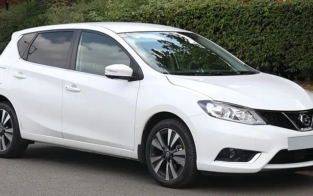

Par Motor › Precios por modelo › Nissan Pulsar
Precio de segunda mano · noviembre de 2026¿Cuánto vale un Nissan Pulsar de segunda mano?

Precio justo estimado de un Nissan Pulsar usado en España, año por año, con los kilómetros normales para su edad y en buen estado: de 8.100 € a 11.600 €. Para tasar el tuyo con sus kilómetros reales y su estado, usa el tasador gratis.
Precios del Nissan Pulsar por año
Pulsar (2014–2018)
Precio de nuevo: 1.2 DIG-T 115 CV, 18.500 € · 1.5 dCi 110 CV, 20.500 € · 1.6 DIG-T 190 CV, 23.500 €
| Año | Km normales | 1.2 DIG-T 115 CV · Gasolina | 1.5 dCi 110 CV · Diésel | 1.6 DIG-T 190 CV · Gasolina |
|---|---|---|---|---|
| 2018 | 100.000 km | 9.200 € | 11.100 € | 11.600 € |
| 2017 | 100.000 km | 8.900 € | 10.900 € | 11.300 € |
| 2016 | 100.000 km | 8.600 € | 10.200 € | 11.000 € |
| 2015 | 100.000 km | 8.400 € | 9.500 € | 10.600 € |
| 2014 | 100.000 km | 8.100 € | 8.800 € | 10.300 € |
Consume muchísimo aceite por un defecto de diseño y, si nadie lo vigila, el motor se queda sin aceite y se rompe. Renault llegó a reparar y reprogramar muchas unidades. Pregunta si se hizo esa reparación y comprueba que el nivel de aceite no baja entre revisiones.
Kilómetros normales: 15.000 al año en gasolina, híbridos y eléctricos, y 20.000 en diésel, con un máximo de 100.000 km (por encima no tasamos: el precio depende demasiado del historial de cada coche). Cifras redondeadas a 100 €.
Preguntas frecuentes
¿Cuánto vale un Nissan Pulsar de segunda mano?
Según el año, la versión y los kilómetros, un Nissan Pulsar usado vale hoy de 8.100 € a 11.600 € en España. El más barato de nuestra tabla es un 1.2 DIG-T de 2014 (8.100 €) y el más caro un 1.6 DIG-T de 2018 (11.600 €). Son precios justos estimados entre particulares y profesionales, con los kilómetros normales para su edad y en buen estado.
¿Cuánto valor pierde un Nissan Pulsar al año?
Con unos años encima, un Nissan Pulsar pierde alrededor de un 3 % de su valor cada año (calculado sobre el 1.2 DIG-T de la generación Pulsar). Los primeros años la caída es mayor y a partir de los 70.000 km se acelera.
¿Qué motorizaciones tiene el Nissan Pulsar?
En nuestra base de datos hay versiones gasolina y diésel, en 1 generación: Pulsar.
¿Qué motores del Nissan Pulsar dan problemas?
Ojo con el Renault y Nissan 1.2 TCe / 1.2 DIG-T (consumo de aceite) (1.2 DIG-T, 2014–2018): son motores con fallos graves y muy extendidos. Antes de comprar uno, pide el historial de mantenimiento y comprueba si ya se hizo la reparación. El resto de motores no tiene problemas fuera de lo normal.
¿Cómo sé si me piden demasiado por un Nissan Pulsar?
Abre el tasador de Par Motor, elige el Nissan Pulsar, el año y los kilómetros reales, y escribe lo que te piden. Te diremos si está por debajo del precio justo (chollo) o por encima (caro). Es gratis y no pide registro ni matrícula.
Otros Nissan
Compara su coste real
El precio de compra es solo una parte. Mira cuánto te costaría al mes con combustible, seguro, neumáticos, mantenimiento y lo que pierde de valor.
Abrir el comparador →